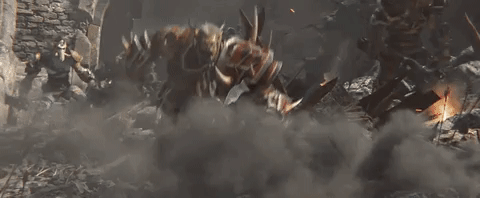

World of Warcraft : Battle for Azeroth

World of Warcraft: Battle for Azeroth is the seventh expansion pack for the massively multiplayer online role-playing game (MMORPG) World of Warcraft, following Legion. It was announced at BlizzCon on November 3, 2017. In contrast to previous expansions, which went live at midnight in each time zone, Battle for Azeroth had a simultaneous release for all regions, corresponding to midnight Central European Summer Time on August 14, 2018.
The expansion allows players to level up to level 120, an increase from the level cap of 110 in the previous expansion Legion.[1] Initially, there will be ten dungeons included with 8.0 with Mythic Plus versions of the dungeons and the first raid, Uldir, being available soon after the game's release. Following the beginning of preorders and the release of four allied races in January 2018, the number of character slots per server was raised from 12 to 16; with the launch of the expansion in August, it was raised to 18, to make room for the two additional races unlocked with initial content.
Gameplay
The expansion allows players to level up to level 120, an increase from the level cap of 110 in the previous expansion Legion.[1] Initially, there will be ten dungeons included with 8.0 with Mythic Plus versions of the dungeons and the first raid, Uldir, being available soon after the game's release. Following the beginning of preorders and the release of four allied races in January 2018, the number of character slots per server was raised from 12 to 16; with the launch of the expansion in August, it was raised to 18, to make room for the two additional races unlocked with initial content. The number of available bag slots in the player's backpack, which has been fixed at 16 slots since the game's release in 2004, will also receive an increase if an authenticator is attached to an account.
Heart of Azeroth
The Heart of Azeroth is an artifact given to the player character from the world soul via Magni Bronzebeard. It is a necklace that can use the power of Azerite, the lifeblood of the embryonic titan Azeroth (See Plot, below). Azerite is similar in function to Legion's artifact power, in that it is gathered normally from playing the game and is used to upgrade an artifact; likewise, the Heart is similar in function to Legion's artifact weapons by having the capacity to be constantly upgraded. Unlike artifact weapons, however, the Heart is shared with all of the player's specializations and can empower all eligible pieces worn simultaneously.
Valid pieces for Azerite empowerment are available for the chest, shoulder, and head slots of all classes. This equipment has multiple tiers of that can be unlocked, represented by a series of concentric wheels with icons representing individual powers; as individual powers are selected, they rotate into slots at the top of the interface, activating the selected benefit and locking out the others unless the player pays to reset their decision. Outer rings offer multiple choices, some based around the character's class and specification, others around the zone or circumstances in which the gear was acquired. The innermost circle offers no such options, instead being a boost to the level of the item itself, and thus providing a flat all-around benefit.
Azerite equipment is currently balanced around being able to unlock the outermost, earliest tier of power immediately upon acquisition, while delaying further advancement until the Heart has been further empowered. For example, the first piece of Azerite equipment, gained shortly after the Heart itself, is fully empowered once the Heart of Azeroth has reached level 3. A character at 120 (the maximum for the expansion) may find a piece whose first tier requires the Heart to have grown to level 12 or greater.
Allied races
Features
- New artifact abilities
- Warfronts
- Allied races
- New Horde races
- Highmountain Tauren
- Nightborne Elves
- Zandalari Trolls
- Mag'har Orcs
- New Alliance races
- Void Elves
- Lightforged Draenei
- Dark Iron Dwarves
- Kul Tiras Humans
- Island Expeditions
Recommended System Requirements
- CPU: Intel Core i7-4770 or AMD FX-8310 or later
- CPU SPEED: Info
- RAM: 8 GB
- OS: Windows® 7 / Windows® 8 / Windows® 10 64 bit
- VIDEO CARD: NVIDIA® GeForce® GTX 960 or AMD™ Radeon™ R9 280 or later
- PIXEL SHADER: 5.1
- VERTEX SHADER: 5.1
- FREE DISK SPACE: 70 GB
- DEDICATED VIDEO RAM: 2 GB